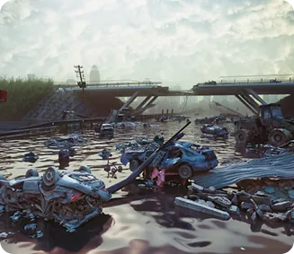
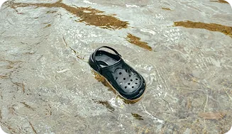
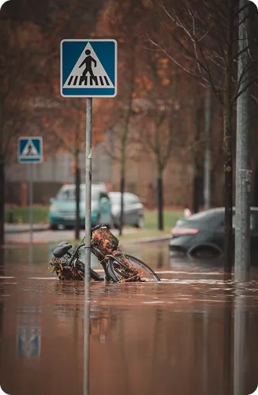
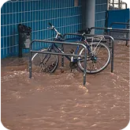
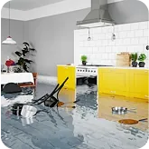
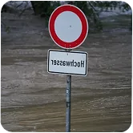
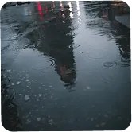
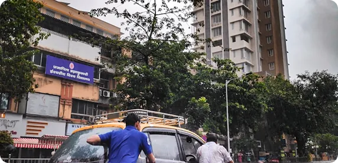
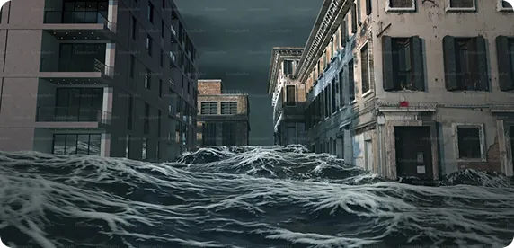
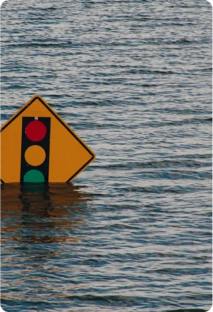

Enchente
Em algumas regiões, enchentes naturais ajudam a fertilizar o solo, especialmente em planícies aluviais. Quando os rios transbordam, eles depositam sedimentos ricos em nutrientes nas margens, o que é ótimo para a agricultura. Um exemplo histórico disso é o Rio Nilo, no Egito antigo: suas enchentes anuais tornavam o solo extremamente fértil e foram fundamentais para o desenvolvimento da civilização egípcia.



O que é enchente?
Enchente é o acúmulo excessivo de água em áreas que normalmente são secas, geralmente causado por chuvas fortes e prolongadas. Quando o volume de água da chuva ultrapassa a capacidade dos rios, bueiros e sistemas de drenagem, ela invade ruas, casas e terrenos, causando alagamentos. As enchentes podem trazer muitos problemas, como danos a propriedades, interrupção do trânsito, risco para a saúde e até perda de vidas. Elas são comuns em regiões urbanas com pouca infraestrutura adequada para escoar a água da chuva.
Causas das enchentes
Precipitações acima do normal em curto período de tempo sobrecarregam rios, canais e drenagens.
Construções em áreas de risco e falta de planejamento aumentam a impermeabilização do solo.
Sistemas de escoamento antigos, entupidos ou mal projetados dificultam o escoamento da água da chuva.
A remoção da vegetação reduz a absorção da água pelo solo, facilitando o acúmulo de água superficial.
Resíduos descartados em ruas e rios entopem bueiros e canais, agravando os alagamentos.
Impacto das enchentes

As enchentes invadem casas, causam perda de móveis, eletrodomésticos e comprometem a estrutura das construções. Muitas famílias acabam desalojadas ou desabrigadas.

A água contaminada pode transmitir doenças como leptospirose, hepatite e dengue. A falta de saneamento e de água potável agrava ainda mais a situação.
Ruas, pontes, redes de energia e esgoto sofrem danos severos, exigindo obras de recuperação que demandam tempo e altos investimentos.

Alagamentos dificultam o deslocamento de veículos e pedestres, causam congestionamentos, suspensões no transporte público e atrasos nos serviços.

As enchentes causam grandes perdas financeiras em diversos setores. Lojas e comércios precisam fechar, produtos são danificados e a produção em fábricas pode ser interrompida. Além disso, os governos têm altos gastos com reparos, assistência social e saúde pública. Pequenos empreendedores e trabalhadores informais são especialmente afetados, ficando sem renda por dias ou semanas.
Prevenção e controle

Prevenir enchentes envolve ações a longo prazo, como o planejamento urbano eficiente, a criação de áreas de escoamento da água e a preservação de matas ciliares e áreas verdes. Também é fundamental investir em sistemas de drenagem modernos, evitar o descarte de lixo nas ruas e promover campanhas de conscientização para a população.
O controle acontece durante e após os eventos. Inclui o monitoramento do nível de rios, previsão do tempo, alertas à população em áreas de risco e atuação rápida da defesa civil. Após as enchentes, é necessário avaliar os danos, reparar infraestruturas danificadas e oferecer assistência às famílias atingidas, garantindo sua segurança e recuperação.

Mudanças climáticas e enchentes
As mudanças climáticas intensificam os eventos extremos, como chuvas fortes e irregulares, aumentando a frequência e a gravidade das enchentes. O aumento da temperatura global interfere nos padrões de precipitação, tornando-as mais concentradas em períodos curtos. Além disso, o derretimento de geleiras e o aumento do nível do mar agravam os riscos de inundações em regiões costeiras. Por isso, combater as mudanças climáticas é também uma forma de prevenir desastres naturais.
